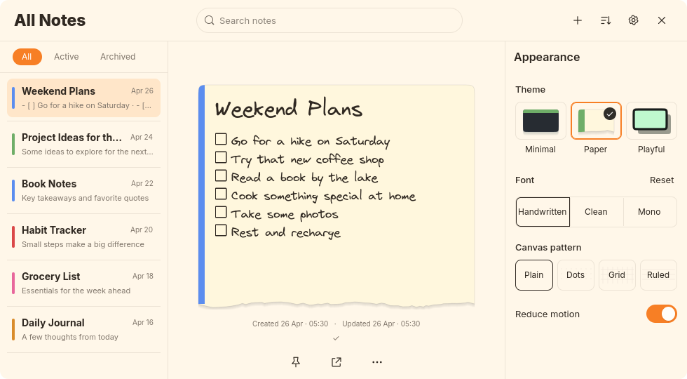

Paper unified Appearance drawer
Requested unified Appearance drawer correction. Header and controls open/close together, the back arrow is removed, and filters dim with the notes. Visually approved October 1, 2026. User authorized commit and push.
Actual GTK captures use temporary notes, config and cache. No user notes or desktop configuration changed.
Closed and open at 720×540
 Closed, original geometry retained
Closed, original geometry retained Open, header and controls in one drawer
Open, header and controls in one drawerScrolling and minimum size
Existing responsive wide layout

980×540 compatibility check, retained expanded sidebar behaviorThe existing responsive breakpoint remains. At compact widths the native modal overlay dims and blocks the filters and notes. At wide widths the existing inline sidebar remains; filters follow the same behavior as the notes.
Individual notes and tools
Typography retained
Appearance heading: Inter, 16px, weight 600. Note Medium title/body: 30/17px, Virgil. Note Regular/Bold remain 400/700; Small/Large remain minus/plus 3px. Sidebar title/snippet/date remain 14/11/10px. This correction changes drawer behavior, not theme typography.
Verification
GTK checks common drawer ancestry, absence of the back arrow, heading/filter alignment, stationary filter geometry, modal hit testing blocking filters while open, restored filter access when closed, Settings toggling, scrolling, minimum/wide layouts and individual-note dimensions. Opening/closing frame checks verify shared header/body positions and actual intermediate movement. Reduce motion is honored. Pixel checks confirm matching filter/note dimming in all four themes with reduced motion, and GTK checks scrim dimensions after wide-to-compact layout changes.
Formatting, 22 tests, strict Clippy, release build, diff and the existing GTK shared-editor regression pass. Native pointer/Escape/timer checks were not repeated. All themes and animation preview. Visual review approved. Commit and push authorized.